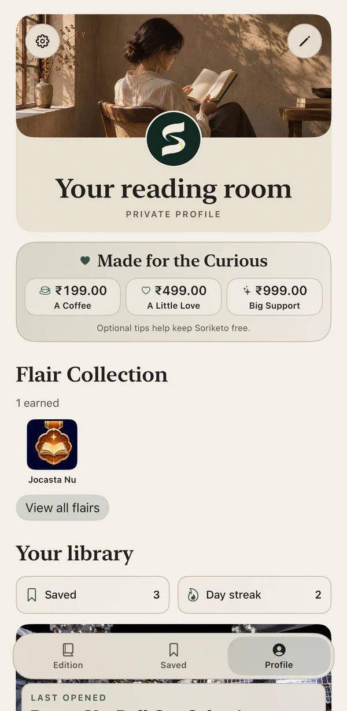
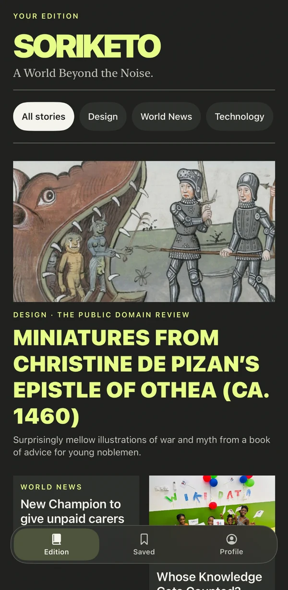

From the Digital Garage
Free for life.
Ad-free for life.
A personal magazine for the wonderfully curious. Discover stories that surprise you and save the ones that stay with you.
Explore Soriketo


Actual Soriketo app screens
Inside Soriketo
A world beyond
the noise.
Follow the topics and sources you’re curious about. Soriketo turns them into a magazine that’s yours to explore.

The Soriketo promise
Every feature.
Free for life.
No ads, subscriptions or paid upgrades. If you’d like to support development, the in-app Tip Jar offers optional, one-time tips. Everyone gets the same Soriketo.
Privacy
Your reading
stays yours.
Soriketo needs no account. Your reader profile, preferences, saved stories, reading history and flairs are stored on your device.
Read the Privacy Policy
Reading and storage
Soriketo stores reading data and cached content locally. The app has no advertising or advertising trackers. Optional summaries use Apple Intelligence on supported devices.
Publishers and content
Soriketo connects directly to publishers and content hosts to fetch feeds, stories and images. Those services can receive standard request information, such as your IP address. When you open a publisher’s website, its own privacy policy applies.
Backups, tips and support
If you export or schedule a backup, Soriketo writes the file to the Files location you choose. Your selected storage provider may sync it. Apple processes optional tips through the App Store. If you email for support, Ravzzy receives the information you share in the message.
Managing your data
You can clear reading history in Profile, remove saved stories in the app and manage exported backup files in Files.
Support
How can
we help?
Will Soriketo always be free?
Yes. Soriketo is free and ad-free for life. Optional tips support development and don’t unlock features or renew automatically.
How do I follow a source?
Open Profile, then tap Settings and choose Sources. You can enable a built-in source or add a public RSS or Atom feed and assign it to a topic you follow.
Can I read offline?
Previously prepared articles can be read offline while they’re stored on your device. Fetching new stories or opening a publisher’s website requires a connection.